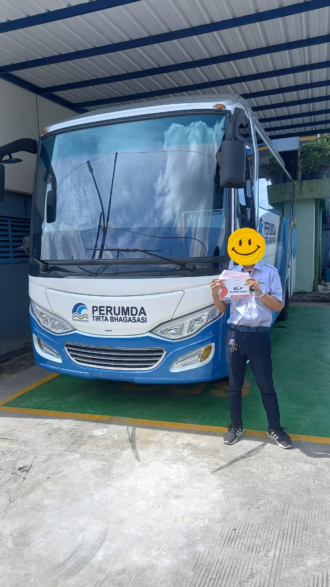
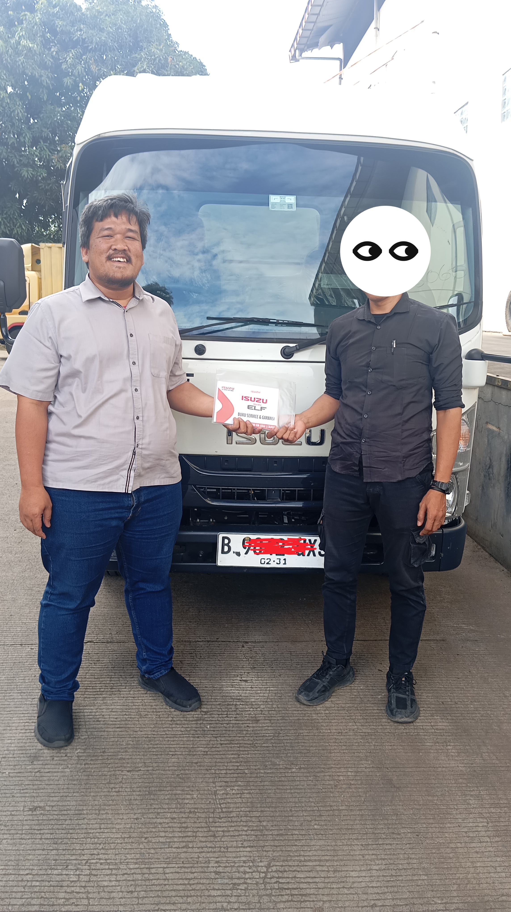

Momen Serah Terima Unit Pelanggan
*Dokumentasi serah terima resmi di Showroom Sunter & pool klien.

Serah Terima Armada Distribusi Bahan Bangunan
Pengiriman unit Isuzu Traga Euro 4 untuk mendukung kelancaran operasional toko material di kawasan Cakung, Jakarta Timur. Proses pengajuan leasing ACC selesai dalam 3 hari kerja dan unit dikirim langsung ke pool pembeli.

Pengadaan Armada Ekspedisi FMCG Jakarta
Penyerahan unit Isuzu Elf NLR 55 TX lengkap dengan karoseri Box Alumunium bersertifikasi SRUT resmi Kemenhub. Siap dioperasikan mengangkut komoditas makanan kering di wilayah Jabodetabek bebas larangan jam truk.

Armada Fleet Ekspedisi Trans-Jawa & Sumatera
Handover unit Isuzu Giga FVM U HP (Sasis Panjang 9,8 Meter) terpasang Karoseri Wingbox Hidrolik untuk klien logistik nasional di Tanjung Priok. Didukung fasilitas servis Bengkel Isuzu Berjalan (BIB) langsung di pool.
Galeri Unit & Ragam Aplikasi Karoseri
Seluruh unit dirancang presisi untuk berbagai jenis usaha dan bersertifikasi SKRB resmi.

Isuzu Traga
Tersedia varian Bak Terbuka, Box Alumunium, dan Blind Van. Irit solar bermesin 4JA1-CR Euro 4.
Lihat Spek Traga →
Isuzu Elf NLR Series
Pilihan utama angkutan dalam kota bebas larangan truk. Pilihan karoseri Box Kargo, Refrigerator, & Microbus.
Lihat Spek Elf →
Isuzu Giga FVM 6x2
Sasis terpanjang di kelasnya (9,8 meter). Mesin 285 PS bertenaga badak khusus Karoseri Wingbox & Bak Besi.
Lihat Spek Giga FVM →
Isuzu MU-X 4x4
Kendaraan tangguh berpenggerak 4 roda (4WD) untuk operasional lapangan area pertambangan dan perkebunan.
Lihat Spek MU-X →Dealer Resmi Astra Sunter
Seluruh transaksi pembayaran aman langsung atas nama rekening resmi PT Astra International Tbk.
Legalitas Karoseri SRUT Terjamin
Karoseri resmi dengan sertifikasi Kemenhub, memastikan uji KIR dan STNK terbit tanpa hambatan razia ODOL.
Bengkel Isuzu Berjalan (BIB)
Mekanik Astra siap mendatangi pool armada Anda untuk perawatan rutin tanpa membuang waktu kerja supir.
Ingin Armada Bisnis Anda Segera Dikirim Seperti Mereka?
Konsultasikan kebutuhan armada dan aplikasi karoseri Anda bersama Ayat (Hidayatullah). Dapatkan hitungan simulasi kredit leasing terjangkau, ketersediaan stok unit ready, serta promo diskon dealer Sunter.